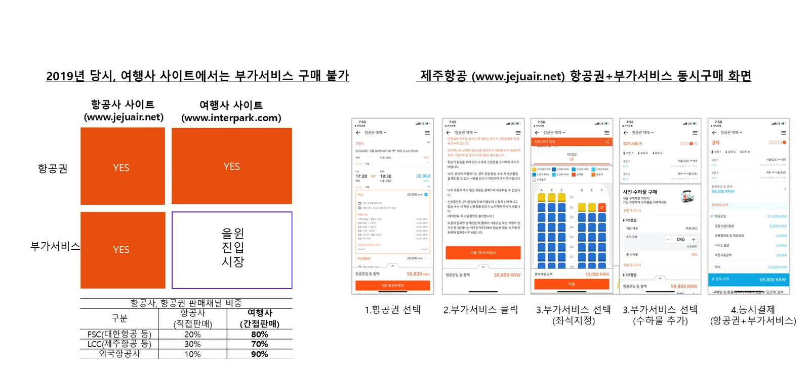

시작점: 여행사에서는 부가서비스를 살 수 없었다
항공권은 대부분 여행사에서 팔립니다. 대형 항공사는 약 80%, 저비용 항공사는 약 70%, 외국 항공사는 약 90%가 여행사 판매입니다. 그런데 2019년까지 여행사 사이트에서는 좌석지정이나 수하물 같은 부가서비스를 살 수 없었습니다. 고객은 항공사 사이트나 공항에서 따로 구매해야 했습니다.

| 구분 | 항공사 직접판매 | 여행사 간접판매 |
|---|---|---|
| FSC (대형 항공사) | 약 20% | 약 80% |
| LCC (저비용 항공사) | 약 30% | 약 70% |
| 외국 항공사 | 약 10% | 약 90% |
항공권 판매채널 비중 (2021년 제휴 제안 자료 중)
올윈에어의 자리: 공급처와 판매처 사이
올윈에어는 공급처(항공사·부가서비스사)와 판매처(여행사·OTA·플랫폼) 사이에서 부가서비스를 유통합니다. 양쪽은 올윈에어에 한 번만 연결하면 됩니다.
공급처
- 항공사 (좌석·수하물·기내식·빠른짐찾기·골프팩)
- 여행 부가서비스 공급사 (eSIM, 픽업, 공항 서비스, 면세 등)
올윈에어 AGS
- 항공사·NDC API 연동과 표준 변환
- 판매처별 노출·가격 관리
- 구매 화면 제공, 통합 결제
- 고객 CS, 정산, 유지보수
- AI 좌석추천 (PNR 기반)
판매처
- 여행사·OTA
- 항공사 자사 채널
- 여행·커머스·결제 플랫폼
→ 고객은 판매처의 화면 안에서 항공권과 부가서비스를 한 번에 구매합니다.
| 구분 | GDS (항공권 유통) | 올윈에어 AGS (부가서비스 유통) |
|---|---|---|
| 연결 대상 | 여러 항공사 ↔ 여러 여행사 | 여러 공급처 ↔ 여러 판매처 |
| 유통 상품 | 항공권 예약·발권 | 좌석지정·수하물·기내식·빠른짐찾기·골프팩, 이후 eSIM·픽업·공항 서비스 등 |
| 상품 특성 | 가격 비교 경쟁이 심한 상품 | 원가 비중이 낮고 가격 비교 대상이 아닌 고수익 상품 |
| 운영 범위 | 예약·발권 중개 | 연동·판매 화면·결제·CS·정산·유지보수까지 책임 |

왜 지금 이 자리가 중요한가
- 항공사의 수익에서 부가서비스 비중이 계속 커지고 있습니다. 해외 저비용 항공사는 매출의 40% 이상을 부가서비스로 냅니다.
- 판매처는 항공권 판매만으로는 수익을 내기 어렵습니다. 부가서비스는 새로운 수익원입니다.
- B2B 게이트웨이는 먼저 연결을 만든 쪽이 표준이 됩니다. 올윈에어는 국내 7개 항공사, 13개 여행사·OTA와 이미 연결되어 있습니다.
자주 묻는 질문
- AGS(Ancillary Gateway System)란 무엇인가요?
- 여러 항공사·부가서비스 공급처와 여러 판매처를 연결해 부가서비스를 유통하는 B2B 통합판매 시스템입니다. 항공권 유통의 GDS에 대응하는 부가서비스 유통 시스템으로, 올윈에어가 운영합니다.
- GDS와 올윈에어는 경쟁 관계인가요?
- 아니요. GDS는 항공권 예약·발권을, 올윈에어는 항공권 이후의 부가서비스 판매를 연결합니다. 판매처는 기존 항공권 판매 흐름을 그대로 두고 올윈에어를 추가로 붙이면 됩니다.
- 왜 여행사에서는 부가서비스를 팔기 어려웠나요?
- 부가서비스는 항공사마다 시스템과 규칙이 달라 여행사가 항공사별로 따로 연동하고 운영해야 했기 때문입니다. 올윈에어가 이 연동과 운영을 한곳에서 대신합니다.
올윈에어와 연동을 시작하세요
항공사·부가서비스 공급사, 여행사·OTA·여행 플랫폼 모두 한 번의 연동으로 시작할 수 있습니다. 연동 방식과 일정은 제휴사 환경에 맞춰 협의합니다.
제휴 이메일partnership@allwin.co.kr
대표 연락처 (평일 09:00~18:00)1522-2284